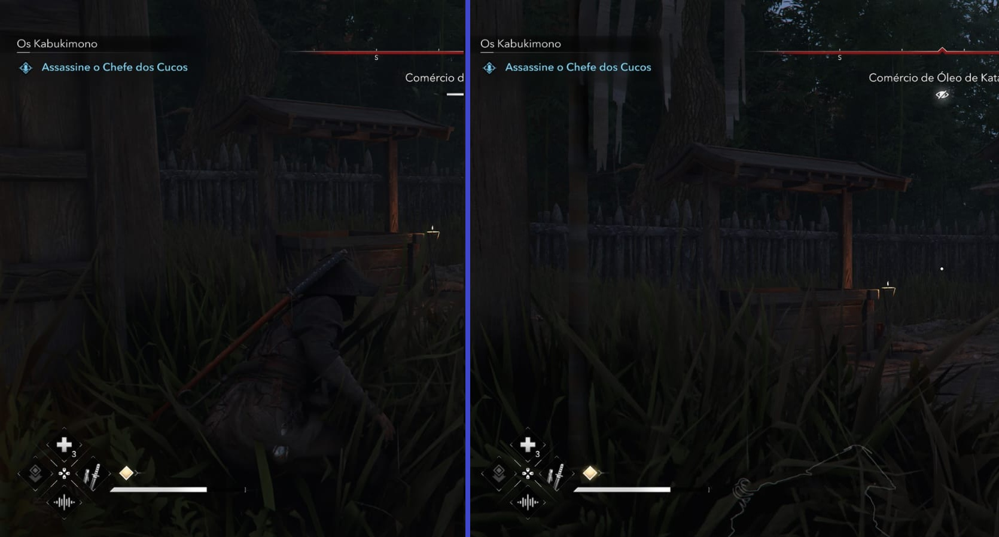
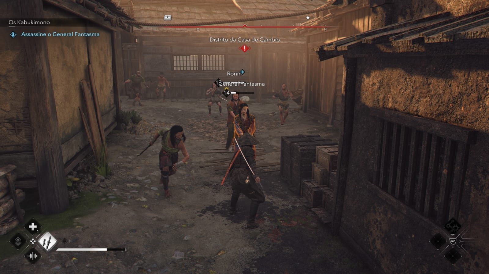
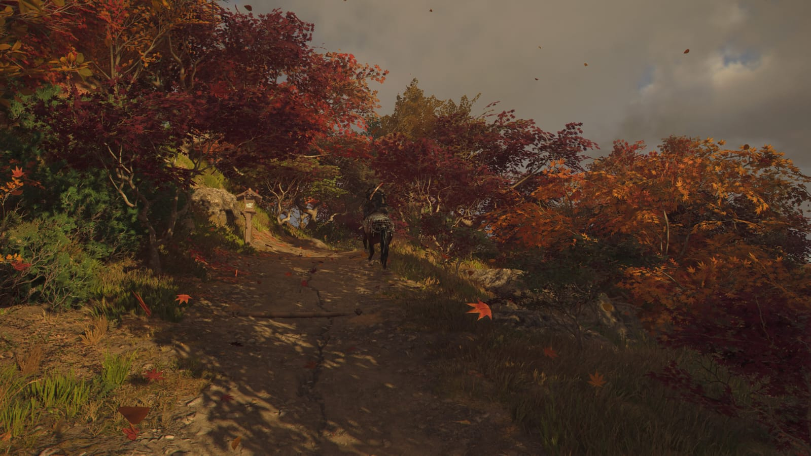
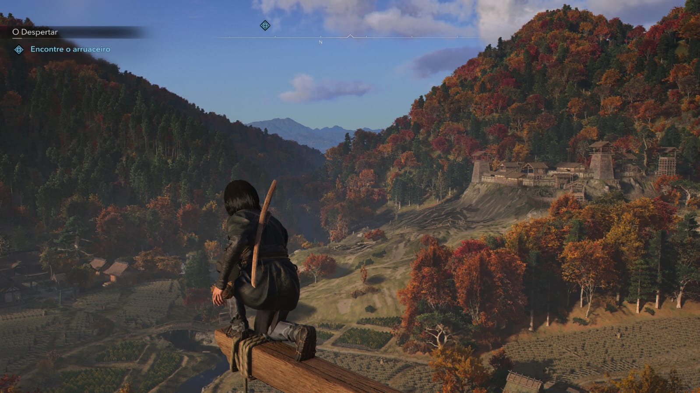

Sinopse: Embarque em uma nova e imensa aventura de Assassin's Creed ambientada no Japão feudal. Torne-se uma assassina shinobi letal e um poderoso samurai lendário enquanto explora um mundo aberto maravilhoso em tempos caóticos.
Eu sou um fã da franquia Assassin's Creed e já joguei vários títulos da série. Acredito que os únicos que não joguei foram o primeiro Assassin’s Creed, Valhalla e Rogue. Finalmente, depois de tantos anos, temos um Assassin’s Creed ambientado no Japão. Curiosamente, esse tema acabou gerando um "concorrente" de peso, o famoso Ghost of Tsushima. Em alguns momentos, vou citá-lo para fazer comparações, especialmente nos quesitos gráficos e história. Vale lembrar que joguei esta versão no PlayStation 5.
Para começar, a mecânica recebeu uma grande melhoria no quesito stealth, o que foi um avanço muito positivo para a franquia. No entanto, essa jogabilidade furtiva fica mais restrita à personagem Naoe, enquanto Yasuke (o outro protagonista) foca mais no combate direto. Particularmente, prefiro o estilo stealth, que sempre foi um dos aspectos que mais gostei na série.
A Naoe tem habilidades que tornam a movimentação furtiva mais dinâmica, como a possibilidade de escalar rapidamente utilizando um arpão e a opção de se deitar no chão para melhor camuflagem – uma diferença considerável quando comparado a apenas se agachar em meio à vegetação. Aliás, um detalhe interessante é que é possível cortar a grama, embora eu não lembre se os NPCs fazem isso para impedir que você se esconda.
No combate, a distinção entre os dois personagens se torna ainda mais evidente. Naoe, sendo mais focada em stealth, tem um combate mais desafiador em comparação a Yasuke, que possui maior resistência e força física. Se você prefere uma jogabilidade mais direta e sem a necessidade de eliminar inimigos um por um, Yasuke é a melhor escolha. No meu caso, optei por invadir castelos com Naoe, e, após me acostumar com sua jogabilidade, consegui aplicar bastante dano e me divertir muito.
Um dos aspectos mais inovadores da franquia neste jogo é a introdução das quatro estações do ano, algo que raramente se vê em jogos. A última vez que notei algo semelhante foi em Pokémon Black & White e em alguns jogos da série Persona. As estações não são apenas estéticas, mas impactam diretamente a jogabilidade. No inverno, por exemplo, há menos vegetação para se esconder, o deslocamento fica mais lento e a respiração dos personagens torna-se visível devido ao frio. Além disso, o jogo incentiva a troca de estação por meio de viagens rápidas, mas com o detalhe de que os inimigos eliminados nos castelos acabam revivendo.
No quesito gráfico, a Ubisoft fez um trabalho impecável. A direção de arte é belíssima, e a variação das estações realça ainda mais o visual do jogo. No entanto, ainda acho que Ghost of Tsushima se sobressai no design de cenário. Apesar disso, não posso deixar de dar nota 100, pois o mundo do jogo é fascinante. A representação dos navios portugueses e japoneses, bem como os templos, é muito fiel e detalhada.
Além disso, o tradicional sistema de escalar locais altos para revelar o mapa e desbloquear viagens rápidas continua presente. Essa mecânica sempre fez parte da franquia e proporciona vistas incríveis dos cenários, tornando a exploração ainda mais imersiva.
A trilha sonora não é nada marcante, sendo bastante comum. Por isso, dou uma nota simples para este quesito. No entanto, um detalhe que gostei bastante foi a opção de voz imersiva, onde todos os personagens falam suas línguas nativas. Japoneses falam apenas japonês, enquanto os portugueses falam português de Portugal. Essa decisão trouxe uma camada extra de imersão ao jogo. Infelizmente, essa opção apresentou bugs na versão para PC, mas, como joguei no PlayStation 5, não tive problemas.
É difícil dar uma nota tão baixa a um jogo que, em teoria, tinha potencial, mas preciso ser sincero. Vou começar com um spoiler leve da parte inicial para contextualizar minha frustração com o roteiro. Adianto: quem escreveu essa história não deveria ser responsável pelo próximo Assassin’s Creed.
Pela primeira vez, a franquia permite jogar com dois personagens simultaneamente: um agressivo (Yasuke) e outro furtivo (Naoe). A mecânica, em tese inovadora, força o jogador a desenvolver builds diferentes para cada um, além de exigir o uso exclusivo de um deles em certas missões. O problema surge quando ambos são obrigados a atuar juntos em algumas quests. A transição é abrupta: um personagem simplesmente "aparece" do nada, sem integração orgânica. Em RPGs como God of War ou Nier, os companheiros estão sempre presentes, o que justifica sua participação. Aqui, porém, a dupla não interage em tempo real durante a exploração, tornando a stealth com dois personagens incoerente.
Seria mais sensato separar as campanhas, criando jogos menores com perspectivas únicas, permitindo ao jogador reviver a história sob outra ótica. A química entre Naoe e Yasuke é praticamente inexistente, e suas motivações parecem desconectadas — algo que explico a seguir.
Até esse ponto, minha nota seria 50/100, mas o final piorou tudo. Primeiro, o contexto:
Yasuke é retratado como um escravo "guarda-costas" de jesuítas (conceito estranho). Recrutado por Nobunaga para virar samurai, sua narrativa prometia explorar um estrangeiro em terra alheia, mas o roteiro o reduz a um símbolo de polêmica (por ser negro), sem aprofundar seu passado ou conexão com o Japão, um exemplo que não foi relevado é como que o Yasuke aprendeu japonês e depois o jogo mostra como ele se torna um Samurai
Naoe, uma ninja de Iga, vê sua vila invadida por Nobunaga. Seu pai, membro secreto da Irmandade, entrega a ela uma "caixa vermelha" antes de ser morto por mascarados. A trama de vingança dela se dissolve quando descobre que Nobunaga não é o vilão, mas sim um alvo dos mascarados, que querem usurpar seu poder.
O problema da história começa quando os dois personagens se encontram na cena do Lorde Nobunaga. Não consegui sentir química entre os dois ao realizar a missão que precisavam cumprir juntos. Além disso, como mencionado anteriormente, o Lorde Nobunaga não era um dos mascarados, então fazia sentido para Naoe querer matá-lo. Afinal, ele foi responsável por assassinar várias pessoas da vila dela. Mas como Naoe aceitou Yasuke como seu aliado, sendo que ele também matou pessoas da vila dela? Enfim, essa conexão entre os dois, movida por um inimigo comum, pareceu forçada. Isso inclui a manipulação( do inimigo em comum dos dois) que foi aplicada em Naoe para matar ou tirar Nobunaga da jogada politica do poder do Japão Feudal.
O clímax é decepcionante: após derrotar os mascarados e templários, recuperam a caixa, só para descobrir que existem três caixas. O jogo termina abruptamente, sem revelar o conteúdo delas ou o paradeiro da terceira. É frustrante dedicar horas a uma jornada sem recompensa narrativa. Pior: as missões secundárias são tão repetitivas(sempre é vai matar alguem ali naquele local do mapa) que optei por focar na principal — decisão que não me arrependo, já que a gameplay é divertida, mas a história é um desastre.
A otimização no PlayStation 5 foi muito boa. Encontrei alguns glitches e bugs, mas nada que comprometesse a experiência.
Assassin’s Creed no Japão finalmente aconteceu, e sua jogabilidade e gráficos são pontos altos. No entanto, o enredo decepcionante impede que o jogo alcance um nível ainda maior. Se você busca um game com mecânica aprimorada e belos cenários, vale a pena conferir. Mas se a história for um fator crucial para sua experiência, pode ser que se frustre com as escolhas narrativas deste título.
Nota: 81
Voltar para a página principal